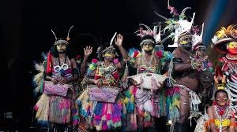
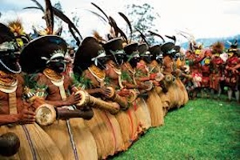

Cultural Celebrations
Festivals in Papua New Guinea are lively events that celebrate local culture and heritage, such as the Mount Hagen Show and Goroka Show, featuring traditional music and dance.
 Traditional Attire of Papua New Guinea
Traditional attire in Papua New Guinea is diverse and varies significantly among the numerous ethnic groups and regions. Many men wear a simple loincloth called a "namba," while women often wear skirts made from woven fibers, grass, or the bark of trees, adorned with beads and other decorative elements. Body paint, elaborate headdresses, and jewelry made from shells, bones, or feathers are common, reflecting the cultural identity and customs of each community.